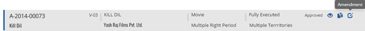
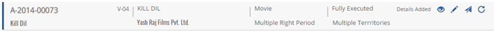


	<section>
		<article>
			<h2>Amendment<span></span></h2>
			<div>
				<p></p>
				<p>This option will be available only when a deal has been approved once. </p>
				<p>To amend the deal, locate particular deal and click on 'Amendment' button.</p>

				<div class="triangle-border top">				
					
				</div>
				 
				<p>Edit Acquisition Deal page appears with Existing Data.</p>

				<p>User can make changes as required and save the deal .User is not allowed to change the movie but can add new movies. User can change the properties of this movie in all tabs click on 'Save Deal' to save the deal. </p>

				<p>System will save these changes and generates new version no for this deal. This deal is again need to be approved if the status is Details added. The version number will be increased by 1 for every amendment and approval.</p>

				<div class="triangle-border top">				
					
				</div>

			</div>
		</article>
	</section>